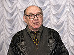
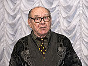

The NEWS 2009:
1. Because of quarantine on a flu on December, 27th, 2009 in Pushkin club the dual evening took place. In the first part of the evening, devoted to a theme « Pushkin and Ênîrrå » A.Zolotukhin has told about two books devoted to this theme. The first book,
«The Dynasty of astronomers Knorre», is written by director of the Nikolaev astronomical observatory Gennady Pinigin and lineal descendant K.Kh.Knorre Suzanne Heral (France). In her the unique material about a dynasty of astronomers Ernest Kristofe, Karl Khristoforovich and Victor Karlovich Knorre is collected. Tatyana Kairova announce enough detailed and inspired reference Suzanne Heral to the Pushkin club, containing new interesting data that K.Kh.Knorre has served as prototype Lenskiy at creation of the novel by Pushkin "Evgenie Onegin". Detailed proofs of this assumption on the basis of research of contemporary records and Pushkin's manuscripts, are resulted in the book « Pushkin and Knorre ». Author A.Zolotukhin has told about this second book. The story about two books, devoted to Pushkin and Knorre has been framed by performance on piano Olga Petrenko of two parts of " the Lunar sonata » Beethoven.
The second part of evening has been devoted to the report of members of club on the books released by them and other materials to the 20 anniversary of club.
2. Day of Sacred Nikolay also Day energetics has noted been on December, 21st, 2009 in Nikolaev by a concert of Chamber Ensemble « Opus Post » under control of the National actress of Russia, the owner of the State premium of the Russian Federation, the winner of many international competitions of musicians, violinist Tatyanas Grindenko. As the initiator of a concert chief Nikolaevoblenergo, Deserved energetics of Ukraine, Boris Vladislavovich Sorkin has acted.
The concert took place contrary to awful weather conditions, has passed with shine, inspiration, is unchained and is democratic. Organizer B.V.Sorkin has taken part in performance of last numbers of a concert also. More in detail about a concert it is possible prohonour in Natalia Hristovoj's article « As it is a pity, that you were not with us », published on December, 26th, 2009 in the newspaper « Evening Nikolaev »


3. During Alexey Batalov's stay in Nikolaev the greatest interest at him visiting one of the most ancient settlements has caused « the Wild Park » (XIII-IX centuries B.C.). Excursion was lead on a place of archeological excavations and in an archeologic museum of Institute of history and the right by director of the Research Center "Lukomorie" Cyril Gorbenko.
More in detail about Alexey Batalov's stay in Nikolaev read in article by Ekaterina's Natocha "Gosha, he of Goga, he - prince, working, the rope-walker... ", published in the newspaper "Evening Nikolaev" on November, 3rd, 2009
4. In Revival the next assembly of Pushkin club on which it has been announced on October, 25th, 2009 took place, that next week in Nikolaev the general favourite, the intellectual, the producer, the teacher, the National actor of theatre and cinema of the USSR and Russia Alexey Batalov will act. Then congratulations of members of club on the 20 anniversary from chairman Anatoly Zolotukhina have followed and he has lead literary-musicale « the Bakhchisarai fountain » Pushkin and Pototskys ». At evening the violinist, the student of 4-th rate of Musical school Alexander Oganesyan who has executed Hans's play "Meditation" and soloist philarmonic societies, the teacher on a class of a bandura of the State university have acted as name Sukhomlinskiy, Maiya Zalizna which has executed under accompaniment of a bandura song by Mayboroda on words Stel'makh «Elegy» and two Ukrainian national songs « For Danube "and" Go I on musics ». After evening members of club were photographed for memory.


5. In Saturday on September 27, 2009, the report-back election meeting Pushkin of club was held, on which the program of activity of club on 21 seasons 2009-2010 years was adopted. Besides was held a concert of the actor of People drama theatre N.A.Trojanov of Juriy Golubev, on which he recited verses and executed songs.


6. In a musical life a of Nikolaev on August, 22nd there was one of the most significant events for last years - performance of world famous Chamber Ensemble « OPUS POST » under direction of Tatyana Grindenko. The invaluable gift to inhabitants was presented by mayor of city Vladimir Chajka with assistance of our fellow countryman and poet Michael Buznik. Read the review of this concert of a member of council of the Nikolaev Pushkin club, the candidate of art criticism, a member of the National Union of composers of Ukraine, Olga Petrenko «Dialogues of epoch with Tatyana Grindenko's Chamber Ensemble» in Russian. Igor Gorbatenko's photo.
7. The Nikolaev Pushkin club congratulates our fellow countryman, the poet, Michael Buznik on two important events. At him by an anniversary of son Khristofor (it is probable, the future artist - look his the first collage!) there was his book poetry « Bookmarks for the sky », Publishing house « YMCA-Press - Russian way », Paris-Moscow, 2009.136 p.: ill. The book is issued Sergey Paradzhanov's by figures, Rustam Khamdamov and Gerard Deparde.
We bring here Sergey Paradzhanov's figure and Michael Buznika's poem, devoted to him:

|
The father, you remember, let on the ground then you already Has conceived farewell to us - corroding Martyr yours, Sergey, crosses multiplying- The order under world's in the staff was "Sajat-New"... Deep layers of light held unflesh And untalented persons were enraged: a cave of foes have overflown. Friends on a zone the genius rescueed. Without Paradzhanov Millions shares of beauty in your films Sergey, dear! Why those terrible days, Fast nobody keeps up with Spirit. 29.06.2007 (A.Zolotuhin's translation) |
8. On June, 6th the Pushkin club has noted 210-years anniversary A.S. Pushkin. At 11 o'clock members of club have gathered at Pushkin's memorial board. Here the schoolgirl of 6-th class of the Nikolaev grammar school ¹2 Anna Talanova read to members of club the article "Pushkin - my dream" also has assigned flowers at a memorial board. Chairman of club A.Zolotukhin has handed over to her the books. Employees of Regional scientific library of A.Gmyrev was presented with new books about Pushkin. Members of club, having photographed for memory , have gone to a monument of the poet, by a monument to Saint Nikolay. At 12 o'clock, by the established 20-years tradition, at a monument of Pushkin, after putting on of flowers, the improvised evening of members of club with Pushkin's recitation and devoted to him took place. Chairman of club has told about the latent contents «Fairy tales on tsar Saltane», as the description of 3 secret arrivals of the Poet to Nikolaev. Besides A. Zolotukhin has informed about the first astronomer of the Black Sea fleet K.H. Knorre, as about the rod prototype of image Lenskiy in the novel "Evgeniy Onegin". To this conclusion the author has come on the basis of studying contemporary records, Pushkin's manuscripts, and also the book of director of the Nikolaev observatory of G.I.Pinigin and lineal descendant Knorre, translator, Suzanne Eral (France) «The Dynasty of astronomers Knorre» (Irina Gudym's Publishing house, Nikolaev, 2009). In conclusion of a holiday members of club were photographed at a monument to the poet.
9. The newspaper " Evening Nikolaev ", June 4, 2009, 3 pages, has published the article the schoolgirl of 6-th class of the Nikolaev grammar school N2 Anna Talanova "Pushkin - my dream", which gives hope to us, present generation of the members of Pushkin club, that the business ours will be continued. I result in completely this article: "Pushkin - my dream"
10. For the 210 anniversary from the date of A.S. Pushkin's birth the Chairman of Pushkin club has prepared two articles, we represent their your attention: « Pushkin and Knorre », and also «the Genius from one sight opens true, and the true is stronger than tsar ».
11. On May, 31th took place literary-musicale « Secular dialogue in prePushkin Russia of the end of XVIII century », leaders, Cand.Phil.Sci. Tatyana Kairova and the candidate of art criticism Olga Petrenko. Evening Lydia Odegova story about an exhibition has opened « The Ukrainian world of an embroidery of singer Anzhelika Rudnitskaja» which has bypassed tens countries of the Europe. Then T.Kairova has told about correspondence of Volter with Ekaterina II, Pototskys and Vorontsovs, and also about a language picture in Pushkin time. Julia Zaverjuha - about history French epigrams and its influence on a public idea. Actors French-language theatre " Le Graal ": Tatyana Koba read poem of Volter on French and in A.S. Pushkin's translation "About Laisa, which has transmitted the mirror in a temple of Venus"; Svetlana Bazul'ko: has executed dance on motives of a century; Veronica Stepanova, Maxim Jarchenko (accompaniment on a piano) - poem of Volter "Madam to princess Ulrike" on French and in translation. O.Petrenko has made the message on musical culture of that period and has illustrated her on a piano with several examples. Alexander Oganyan has executed to "Bure" of Bakh on a violin, and Nastya Levitskaya has executed George Bizet's romance "Fairy tale" on words of Field Ferie, accompanied leader Helen Borovitskaja.
12. The Pushkin club is invited at 15 o'clock on May, 9th this year in the House of culture of builders to viewing of a comedy by Feodor Koni's one action « by the Girl the hussar » in performance of People's drama theatre. Performance is dated to for 64-th anniversary of the Victory over Second World War (SWW) - the play was played by front theatres. On public principles here already 47-th season supervises over a folk theatre the veteran of the SWW, the honored artist of Georgia, the honourable citizen of our city, the Honorary member of Pushkin club Nikolay Alekseevich Troyanov. We bring to your attention the invitation card on performance.


13. On April, 26th 2009 took place literary-musicale evening, devoted to the 210 anniversary from the date of A.S.Pushkin's birth with participation of family of the Honoured artist of Ukraine Juriy Andreevich Makushin, his wife Inna Viktorovna and son Victor. The family is authors of a monument and two memorial boards, devoted A.S. Pushkin's to stay in a Nikolaev. Chairman of club A.I. Zolotukhin has recollected how were created from his representation of a monument and memorial boards to Pushkin. Director of a regional art museum by name of V.V. Vereschagin S.N. Rosljakov has told that all members of family have finished the Academy of arts in Leningrad (St.-Petersburg) at the well-known teachers. All of them authors of sign monuments in the Nikolaev area and Nikolaev. Besides all of them are teachers of high schools. S.N. Rosljakov has given the detailed characteristic to each of members of family Makushin. Has told about creation of the textbooks first in Ukraine by them on drawing. Victor Makushin besides accepts still participation and in philharmonic concerts. The teacher of Musical school N.I. Papushenko read the poem, devoted to family Makushinyh also has rendition on P.I. Tchaikovsky's piano the play "April" from a cycle "Seasons". Together with Victor Makushinym (flute) they also have executed: "Melody" of the Glitch from an opera «Orfey»; "Impromptu" by Arenskiy; "Vocalese" and "Melody" by S. Rakhmaninov's. At assembly of club the decision again to address to city authorities was accepted, and family Makushinyh has promised to restore A.S.Pushkin's memorial board on A.P.Zontag's house.
14. On March 22-th the Pushkin club has celebrated the 10 anniversary of the World day of poetry. At evening there were dramatics, poets, writers. Event of session was perusal by honored artist N.A.Troyanov poems « the Tavern called « Blood of the bull » about destruction of poet Marlo, contemporary Shakespeare. E.M.Farberova has acquainted with the poetic Almanac of the most presented children of Nikolaev. The writer and playwright Anatoly Maljarov it is artistic recite verses of the Nikolaev poets. The winner of the State premium by T.G. Shevchenko, the poet, Dmitro Kremin' has told about new books. Poet Arcady Surov it is brilliant recite the verses. Marina Matveeva has presented the pupils of pianists and recite own verses. Nikolay Shelest recite verses of our fellow countryman of poet Anatoly Poperechny. Evening conducted the secretary of Pushkin club T.G. Moskalenko. By the established tradition in conclusion of session all participants were photographed for memory.
15. In the newspaper « Evening Nikolaev » to N.V.Gogol's 200 anniversary article of Honorary member of Pushkin club, the professor, T.K. Peresun'ko is published « Gogol loves an gogol'-egg flip », with which it is possible to familiarize on a site: http://www.vn.mk.ua/
16. According to the program on February 22 creative evening took place in Pushkin club N.I. Papushenko «Such marvellous Spain». Her colleagues, teachers of Musical school have participated in it. As the composer of the program leading, the performer and the accompanist on a piano Natalia Ivanovna has acted. L.Kirsanova (domra) and V. Zav’yalova (piano) «Spanish fantasy» by I. Frolov have opened evening. Vocalists have executed: student N. Trofimishina «Song Gipsy» of A.Varlamov, A.Velichko's teachers «I here, Inezilia» of M. Glinka's on A.S.Pushkin's words and «The Spanish song» of L.Delib, O.Kedis - «Serenade Don Zhuan» of P.I. Tchaikovsky, and L.Lakiza - «The Habanera from Z. Bize's "Carmen's" opera». Also have been played: on a violoncello V. Terentyev of E.Granadosa's "Intermezzoes", on an alto V. Zavyalov «In imitation Al'benis» by R. Schedrin, on N.Iljachuk's violin has executed "Tango" by I. Al'benis and «The Spanish dance» by M. Skorik. N.I.Papushenko has played "Cordova" of I.Al'benisa and «Evening in Grenada» of K.Debjussi. Grateful members of club have warmly accepted founders of an original holiday of high Music.
17. Evening of personal creativity of members of the Pushkin club took place in January 25th. Basically the verses, devoted to Pushkin, have been executed. At evening of the youth members of club of readers for the first time has acted. A.S. Pushkin's small drama « the Stone visitor » has been presented in the game form. In final Natalia Papushenko has play by N.K. Metner's creation on a piano.
18. In Irina Gudym's publishing house there was a book of the professor, the Honorary member of Pushkin club, T.K.Peresunko « Vsevolod Mejerkhol'd - the genius and villainy » (112 p., 61 il.). The author in it based exclusively on documents. The tragical destiny of the great reformer of theatre Vsevoloda Mejerhol'da proves, that « the genius and villainy two things not joint » (A.S. Pushkin). It is fair not only in an internal antagonism, but also in external, in struggle with Soviet totalitarian a regime. The computer breadboard model of the book and a cover is executed by A.I. Zolotukhin. We show a turn of a cover of the book: